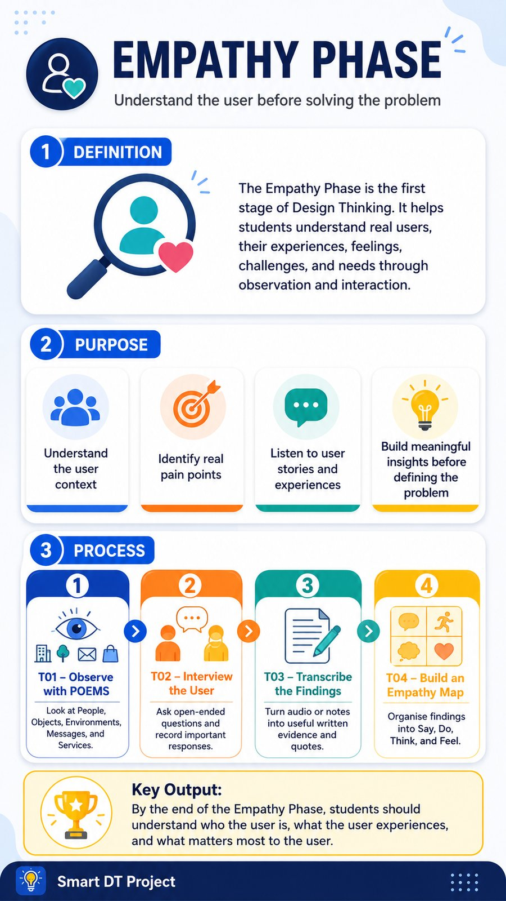

This page is the living reference for the Smart DT CAMP21 design system. Every component below is rendered by css/smartdt-master.css — copy the markup, link the stylesheet, and any new page follows the same design automatically.
Always use var(--token) — never hardcode hex values in page CSS.
Font: Poppins (weights 400–900) · Shell sizes: header --header-h 76/72px, nav --nav-h 84/72/86px, side padding --page-x 28/16/32px · Radii: hero 30 · card 26 · box 24 · drop 22 · tile 18 · input 17 · pill 999.
.hero-card > img — max 900px wide, image clamps 170–360px tall.

.btn (navy, default) · .btn.orange (call-to-action) · .btn.secondary (light).
.template-nav > .chip, active chip gets .active.
The 4-box pattern above every template: default · .warn · .enough · .case.
details.guide-drop with teal .guide-link inside.
Need help with this template?
Explanation of when to open the full guide.
Open Full GuideInputs use --r-input radius; focus ring is teal. Grid: .form-grid (2-col, 1-col on mobile).
.option — states .selected, .correct, .wrong.
Phase completion celebration. Real pages add badge image + action buttons.
Phase Complete!
Congratulations message and next-step guidance for the student.
1. Link Poppins, then css/smartdt-master.css, then css/smartdt-shell-patch.css (always last — it is the final shell authority).
2. Wrap the page in .app → .header + .page + .bottom-nav. Copy those blocks from this file.
3. Compose content from the components above. Use tokens for any custom touches.
4. Never hardcode colors, radii or shell sizes. If a value isn't a token, ask whether it should be.